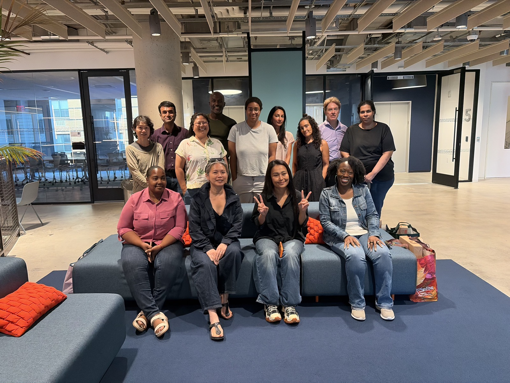
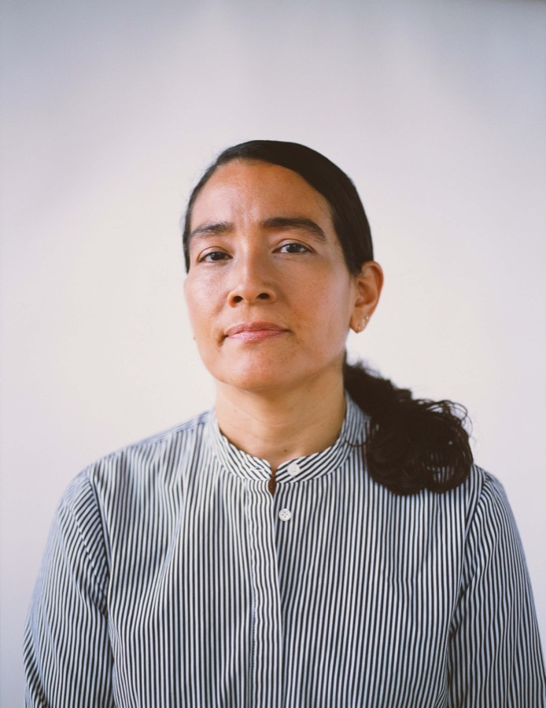

Tech and AI training for your team or community.
Skillcrush by PowerToFly designs beginner-friendly tech and AI training for workforce organizations, colleges, community groups, and employers.
Talk to us about a partnership →

14
Years teaching tech
200K+
Students
148
Countries
Who we work with
Government & economic development
Turn workforce funding into training that prepares residents for tech and AI jobs.
Educational institutions
Add career-focused tech and AI training to your offering without building curriculum from scratch.
Community organizations
Give the people you serve a supported path into tech, with laptops, coaching, and community built in.
Employers
Reskill your team for AI and fill new roles with people who already know your business.
Two ways to partner
Custom programs
We build it with you.
Tell us who you need to train and what you want to achieve. We’ll design and deliver a program around your learners, goals, and budget.
- Customized curriculum and live instruction
- Learner support like laptops, transportation, and mentorship
- Career coaching through the job search
Access our training catalog
Use what we've already built.
Give your learners or employees access to proven Skillcrush tracks and individual courses in tech and AI.
- Choose from AI Developer, Full Stack, and Front End tracks, plus individual courses in Python, AI, UX, and more
- Launch quickly with beginner-friendly, career-focused training
- Volume pricing for teams and cohorts
15 New Yorkers. 12 months. Beginner to AI developer.
A fully funded workforce program for New Yorkers underrepresented in tech: six months of technical training, then up to six months of job search support. Now underway at Civic Hall.
*Demographic percentages reflect confirmed application data.
Recruitment
Outreach and selection of 15 learners from communities underrepresented in tech
Curriculum
Web foundations through full-stack and AI application development
Hybrid instruction
Weekly in-person classes at Civic Hall, plus online coursework on a set weekly schedule.
Career support
Up to six months of career coaching after training.
Hear from the Zero Irving cohort
"I almost talked myself out of applying. The biggest wall in front of you is the one you build yourself."
"Getting this scholarship was the validation that my career pivot had a structured path forward."
"Success here doesn't require a traditional engineering background."
From first lesson to first job.
Skillcrush is part of PowerToFly, a community of 1.1M+ professionals connected with employers who are hiring.
Build skills
Beginner-friendly curriculum with instructor feedback in AI, web development, and UX.
Finish the program
Support designed around your learners helps them stay motivated to complete their courses.
Get job-ready
Career coaching on resumes, LinkedIn, portfolios, and interviews.
Get hired
PowerToFly’s employer network connects graduates with companies hiring now.
We measure every cohort at each step, so you can show funders and boards what your investment made possible.
Serving 15 people or 1,500?
Tell us who you want to reach, and we'll build the plan together.
Talk to us about a partnership →